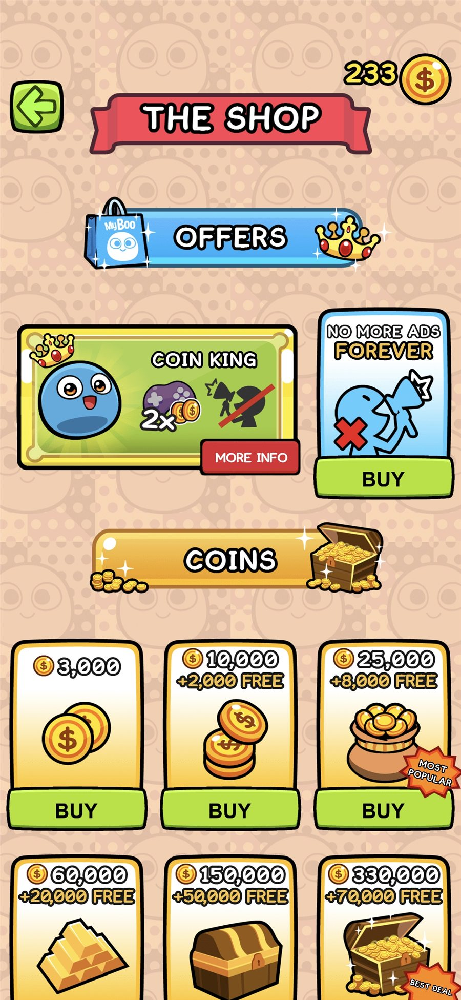
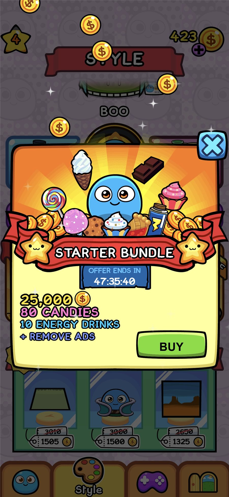
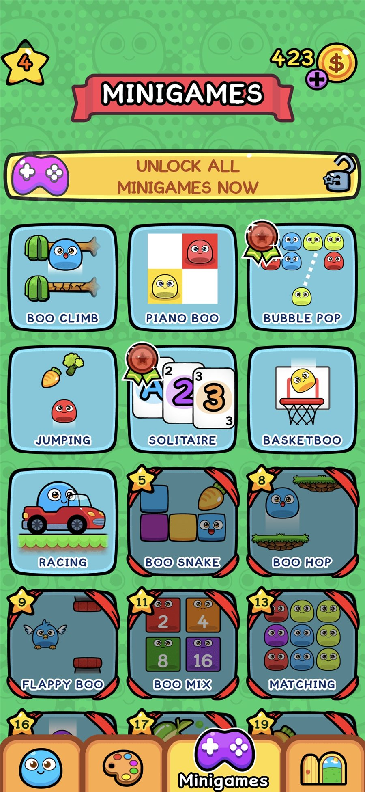
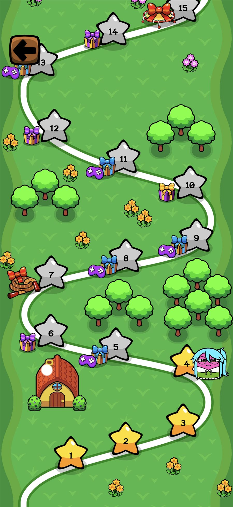

My Boo é um jogo de pet virtual free-to-play em que o jogador cuida do seu Boo todos os dias e joga minijogos de aventura para ganhar moedas. Na loja, as moedas liberam roupas e acessórios para personalizar o Boo, que pode até se vestir de gatinho, cachorro e outros bichinhos.
Entrei no My Boo quando o jogo já estava no ar, como a única game designer de um time de cinco pessoas. Com mais de dez anos nas lojas, a principal batalha era contra a depreciação natural que os jogos sofrem com o tempo.
A meta do time era contrabalançar essa queda com poucos recursos, por meio de eventos especiais de LiveOps, testes e da economia que os sustentava.
A loja e seus bundles seguem um princípio simples de monetização: Oferecer a coisa certa no momento certo. Pacotes de moedas com moedas extras grátis premiam as compras maiores, e ofertas como a remoção de anúncios e o Starter Bundle reúnem o que um jogador novo precisa para começar em um único pacote por tempo limitado. Quando uma oferta corresponde a uma necessidade real do jogador, a compra é percebida como ajuda e não como pressão, o que sustenta a receita e mantém a economia saudável.


O cuidado é o coração de um jogo de pet virtual, e no My Boo ele se organiza em quatro áreas: Brincar, alimentar, higiene e saúde. O desbloqueio de itens de cuidado faz com que o jogador sempre tenha algo a mais para descobrir ao jogar. Isso dá uma sensação de novidade às ações de rotina, recompensa o progresso com novas formas de cuidar do Boo e dá ao jogador um motivo para continuar voltando.
A customização permite que o jogador deixe o seu Boo do jeitinho que quer, com chapéus, cabelos, roupas, cores, fantasias e decoração do quarto. Em jogos de cuidado, seus benefícios vão além da aparência: Cria apego emocional, porque o Boo vira um reflexo do jogador; dá um lugar à expressão e à criatividade no jogo; e cria um uso de longo prazo para as moedas que o jogador ganha, o que liga a customização à economia e à progressão.
Os minigames e as conquistas dão ao jogador outras formas de jogar, e os minigames são a fonte das moedas necessárias para comprar as customizações. Uma economia amarrada, em que cada fonte de moeda tem um uso claro e cada uso tem uma fonte clara, é essencial para a saúde de um jogo: Mantém a progressão justa, evita inflação e becos sem saída e faz cada atividade importar para as outras. Aqui, jogar os minigames alimenta a customização, que alimenta o apego e a vontade de continuar jogando.

Toda atividade no jogo faz o Boo ganhar níveis. Os níveis são importantes porque desbloqueiam recompensas e novas features, o que mantém o jogador engajado por muito tempo: Sempre há um próximo nível a alcançar e algo novo esperando no caminho. Ao ligar todas as ações à mesma progressão, o jogo faz cada momento de jogo contar.

Em um jogo longevo, a visibilidade nas lojas cai naturalmente com o tempo, e um time pequeno tem pouco espaço para grandes reformulações. A resposta foi dar ao jogo um ritmo previsível de novidades: Um calendário de eventos especiais e um álbum de figurinhas, ganhas ao jogar e nos eventos, que dá ao jogador um objetivo de longo prazo e mira a retenção do D30.
Como o My Boo é voltado ao público infantil, a monetização e as features de gacha exigem cuidado extra para não esbarrar em questões legais. O planejamento das ofertas, dos eventos ligados à loja e das mecânicas de coleção precisou considerar esses limites desde o início.
Um evento afeta a economia e a loja ao mesmo tempo, e ajustar uma parte isoladamente desequilibra as outras. Por isso a economia passou a ser revista de forma holística sempre que os eventos mudavam, e não evento a evento.
Com um time pequeno, cada mudança precisava ser validada antes de ser mantida. Testes com anúncios e sobre a organização do calendário de eventos guiaram essas decisões.
No período de atuação no projeto, o My Boo, um jogo com mais de dez anos nas lojas, acompanhou a queda natural que os jogos sofrem com o tempo, mas registrou picos de crescimento impulsionados pelo trabalho do time.
Em um jogo de longa duração, um calendário constante e testes contínuos criam picos de crescimento em meio à queda natural.